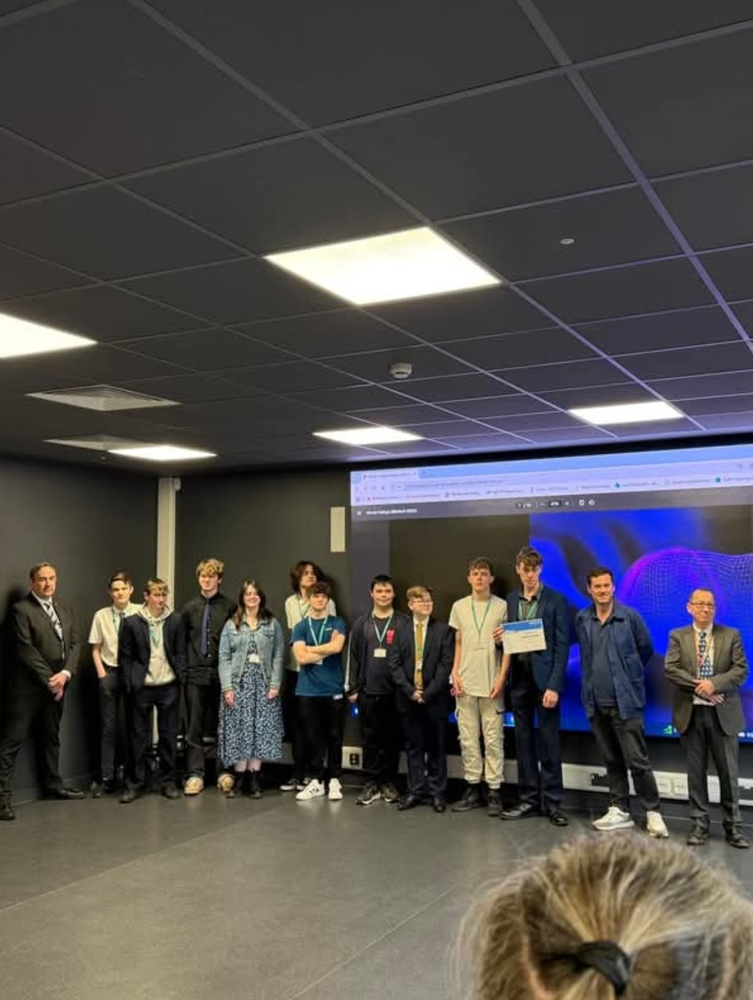

Gallery
Welcome to the gallery section of my portfolio! Here, you'll find a collection of images showcasing my projects, skills, and experiences in the field of cyber security and digital support services. Each image is accompanied by a brief description to provide context and insight into my work.

My Home Network Setup - This is the machines which I use to run my home network on.

Strode CyberCon 2025 - This is the CyberCon team and I recieving our Cyber First award.

These 4 images are some of my projects from Cruck Tent LDT where I created models in blender for clients.